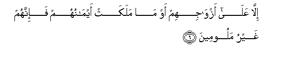
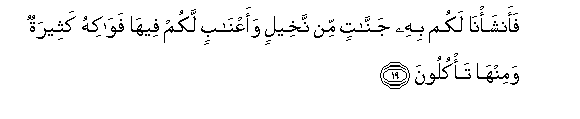

Sacred Texts Islam Index
Hypertext Qur'an Unicode Palmer Pickthall Yusuf Ali English Rodwell
Sūra XXIII.: Mu-minūn, or The Believers. Index
Previous Next

The Holy Quran, tr. by Yusuf Ali, [1934], at sacred-texts.com
Sūra XXIII.: Mu-minūn, or The Believers.
Section 1
1. The Believers must
(Eventually) win through,—
2. Allatheena hum fee salatihim khashiAAoona
2. Those who humble themselves
In their prayers;
3. Waallatheena hum AAani allaghwi muAAridoona
3. Who avoid vain talk;
4. Waallatheena hum lilzzakati faAAiloona
4. Who are active in deeds
Of charity;
5. Waallatheena hum lifuroojihim hafithoona
5. Who abstain from sex,

6. Illa AAala azwajihim aw ma malakat aymanuhum fa-innahum ghayru maloomeena
6. Except with those joined
To them in the marriage bond,
Or (the captives) whom
Their right hands possess,—
For (in their case) they are
Free from blame,
7. Famani ibtagha waraa thalika faola-ika humu alAAadoona
7. But those whose desires exceed
Those limits are transgressors;—
8. Waallatheena hum li-amanatihim waAAahdihim raAAoona
8. Those who faithfully observe
Their trusts and their covenants;
9. Waallatheena hum AAala salawatihim yuhafithoona
9. And who (strictly) guard
Their prayers;—
10. These will be the heirs,
11. Allatheena yarithoona alfirdawsa hum feeha khalidoona
11. Who will inherit Paradise:
They will dwell therein
(For ever).
12. Walaqad khalaqna al-insana min sulalatin min teenin
12. Man We did create
From a quintessence (of clay);
13. Thumma jaAAalnahu nutfatan fee qararin makeenin
13. Then We placed him
As (a drop of) sperm
In a place of rest,
Firmly fixed;
14. Thumma khalaqna alnnutfata AAalaqatan fakhalaqna alAAalaqata mudghatan fakhalaqna almudghata AAithaman fakasawna alAAithama lahman thumma ansha/nahu khalqan akhara fatabaraka Allahu ahsanu alkhaliqeena
14. Then We made the sperm
Into a clot of congealed blood;
Then of that clot We made
A (fœtus) lump; then We
Made out of that lump
Bones and clothed the bones
With flesh; then We developed
Out of it another creature.
So blessed be God,
The Best to create!
15. Thumma innakum baAAda thalika lamayyitoona
15. After that, at length
Ye will die.
16. Thumma innakum yawma alqiyamati tubAAathoona
16. Again, on the Day
Of Judgment, will ye be
Raised up.
17. Walaqad khalaqna fawqakum sabAAa tara-iqa wama kunna AAani alkhalqi ghafileena
17. And We have made, above you,
Seven tracts; and We
Are never unmindful
Of (Our) Creation,
18. Waanzalna mina alssama-i maan biqadarin faaskannahu fee al-ardi wa-inna AAala thahabin bihi laqadiroona
18. And We send down water
From the sky according to
(Due) measure, and We cause it
To soak in the soil;
And We certainly are able
To drain it off (with ease).

19. Faansha/na lakum bihi jannatin min nakheelin waaAAnabin lakum feeha fawakihu katheeratun waminha ta/kuloona
19. With it We grow for you
Gardens of date-palms
And vines: in them have ye
Abundant fruits: and of them
Ye eat (and have enjoyment),—
20. Washajaratan takhruju min toori saynaa tanbutu bialdduhni wasibghin lilakileena
20. Also a tree springing
Out of Mount Sinai,
Which produces oil,
And relish for those
Who use it for food.
21. Wa-inna lakum fee al-anAAami laAAibratan nusqeekum mimma fee butooniha walakum feeha manafiAAu katheeratun waminha ta/kuloona
21. And in cattle (too) ye
Have an instructive example:
From within their bodies
We produce (milk) for you
To drink; there art, in them,
(Besides), numerous (other)
Benefits for you;
And of their (meat) ye eat;
22. WaAAalayha waAAala alfulki tuhmaloona
22. And on them, as well as
In ships, ye ride.